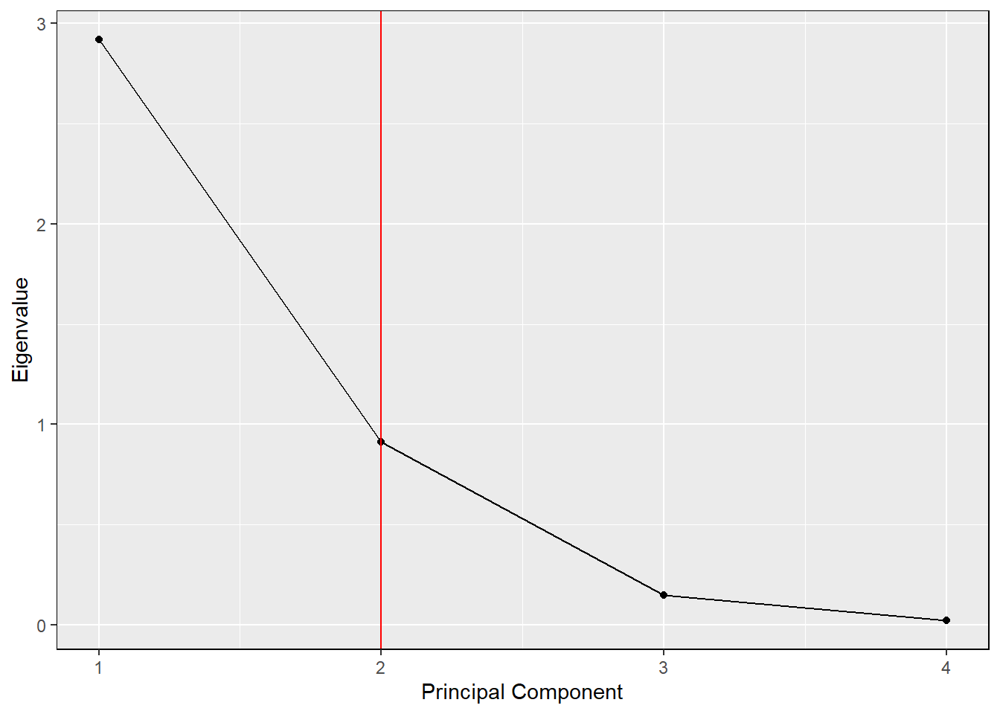
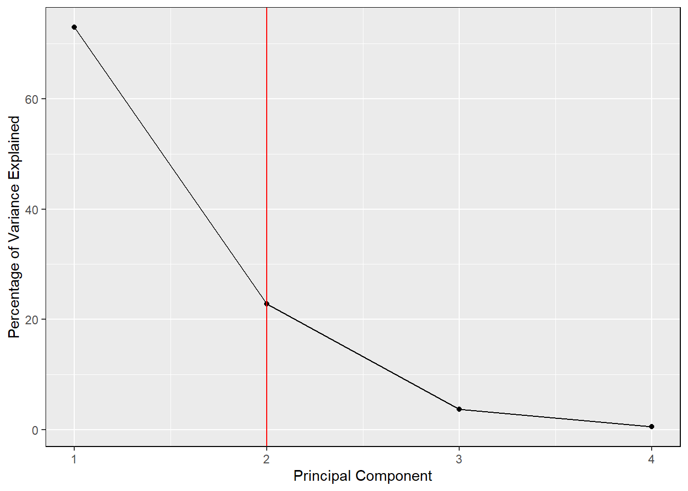
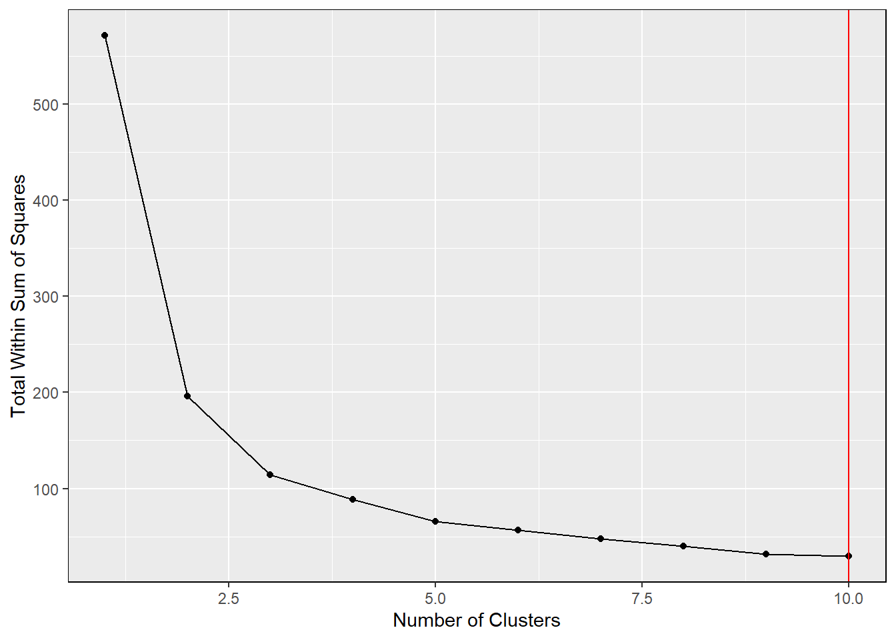
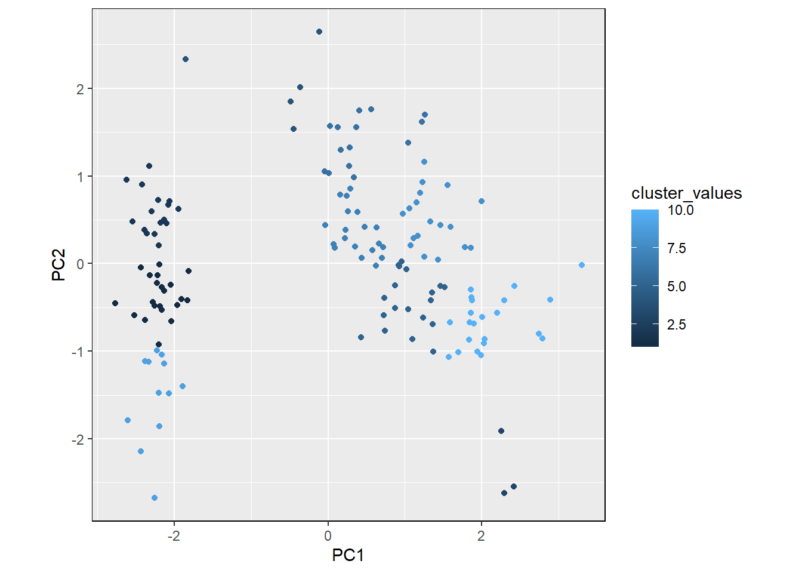
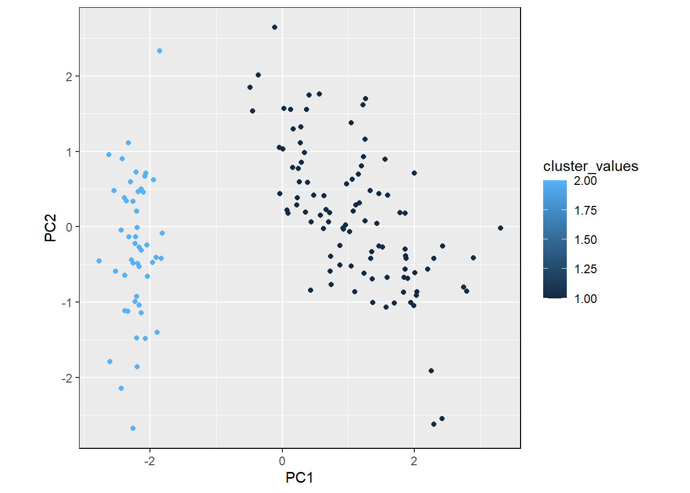

#library(dplyr)
library(ggplot2)
#iris <- read.csv("data/Iris.csv") %>%
# select(-Id) # example dataset
#detach("package:dplyr", unload = TRUE)collaborative-data-science
Introduction
High-dimensional proteomics data generated from mass spectrometry often includes thousands of proteins measured across multiple experimental conditions. In studies involving different treatments and intoxication states, it can be difficult to directly interpret patterns in protein abundance due to the complexity of the dataset.
Principal component analysis (PCA) is a commonly used method to reduce the dimensionality of this type of data while preserving the most important sources of variation. By transforming the original variables into a smaller set of principal components, PCA allows researchers to more easily visualize and interpret differences between experimental conditions.
Objective
The objective of this package is to provide a simple and flexible workflow for analyzing high-dimensional proteomics data. Specifically, this package allows users to:
- Perform principal component analysis (PCA) on numeric datasets
- Determine the optimal number of principal components using scree plots
- Visualize variance explained across components
- Perform cluster analysis to group similar observations
These tools are designed to help identify patterns in protein abundance that may be associated with treatment or intoxication conditions.
Workflow Overview
The general workflow for this package includes:
- Input a dataset containing protein abundance values
- Perform PCA using the
pca()function
- Generate scree plots using
scree_plot()to determine the number of meaningful components
- Apply clustering using
cluster_analysis()to identify groups within the data
This workflow helps simplify complex datasets and highlights underlying structure in the data.
scree_plot <- function(eigen_values, threshold = 85, y_axis = "Eigenvalue") { # generates a scree plot and determines how many principal components are optimal for analysis
num_comp <- 0
exp_var <- 0
while(exp_var < threshold) { # determines the minimum number of principal components that explains the minimal threshold percent of variance (default is 85 percent)
num_comp <- num_comp + 1
exp_var <- exp_var + 100 * eigen_values[num_comp]/sum(eigen_values)
}
percentage <- t(as.matrix(100 * eigen_values/sum(eigen_values))) # determines how much of the dataset's variance can be explained by the given eigenvalues
columns <- c()
for(i in 1:ncol(percentage)) { # name columns to their appropriate principal components
columns <- append(columns, paste0("PC", i))
}
colnames(percentage) <- columns
if(y_axis == "Percentage") { # y axis is the actual eigenvalue of each number of components, but can be modified to show percentage of explained variance instead
y_axis <- "Percentage of Variance Explained"
eigen_values <- percentage[1,]
}
value_coords <- data.frame(1:length(eigen_values), eigen_values)
plot <- ggplot2::ggplot(data = value_coords, aes(x = value_coords[, 1], y = value_coords[, 2])) +
ggplot2::geom_point() +
ggplot2::geom_line() +
ggplot2::xlab("Principal Component") +
ggplot2::ylab(y_axis) +
ggplot2::geom_vline(xintercept = num_comp, col = "red") +
ggplot2::theme(panel.border = element_rect(colour = "black"))
output <- list(plot, num_comp, percentage)
names(output) <- c("plot", "optimal_number_of_components", "percentage_of_variance_explained")
return(output)
}pca <- function(data, eigen_opt = NA, threshold = 85) { # conducts principal component analysis
std <- data[0, sapply(data, is.numeric)] # exclude non-numeric properties from analysis
for(i in colnames(std)) { # standardized values for each factor
std[1, i] <- mean(as.numeric(data[, i]))
std[2, i] <- sd(as.numeric(data[, i]))
}
rownames(std) <- c("mean", "sd")
trns <- data[, sapply(data, is.numeric)] # transform (AKA standardize) data so that each factor has a mean of 0 and a variance of 1
for(i in colnames(std)){
trns[, i] <- (data[, i] - std[1, i])/std[2, i]
}
cov <- data[0, sapply(data, is.numeric)] # generate a covariance matrix for each factor
for(i in colnames(cov)) { # i is column and j is row, so should go [j, i]
for(j in colnames(cov)) {
cov[j, i] <- cov(trns[, j], trns[, i])
}
}
eigen <- eigen(data.matrix(cov)) # generate eigenvectors and eigenvalues from the covariance matrix
if(is.na(eigen_opt)) { # if the desired number of principal components is not specified, this will be determined by the "optimal" number of principal components based on "threshold" (that is, what is the minimum number of principal components needed to explain "threshold" % of the dataset ("threshold" default is 85%))
eigen_opt <- scree_plot(eigen$values, threshold = threshold)$optimal_number_of_components
}
pca <- as.matrix(trns[, sapply(trns, is.numeric)]) %*% eigen$vectors[, 1:eigen_opt] # conduct a matrix mutiplication to transform the original data into principal components
columns <- c()
for(i in 1:ncol(pca)) { # name columns to their appropriate principal components
columns <- append(columns, paste0("PC", i))
}
colnames(pca) <- columns
output <- list(pca, eigen_opt, eigen$values, eigen$vectors, as.matrix(cov), as.matrix(trns), as.matrix(std))
names(output) <- c("pca", "optimal_number_of_principal_components", "eigen_values", "eigen_vectors", "covariance_matrix", "transformed_data", "standardized_values")
return(output)
}test <- pca(iris)
head(test$pca) PC1 PC2
[1,] -2.257141 -0.4784238
[2,] -2.074013 0.6718827
[3,] -2.356335 0.3407664
[4,] -2.291707 0.5953999
[5,] -2.381863 -0.6446757
[6,] -2.068701 -1.4842053test$optimal_number_of_principal_components[1] 2test$eigen_values[1] 2.91849782 0.91403047 0.14675688 0.02071484test$eigen_vectors [,1] [,2] [,3] [,4]
[1,] 0.5210659 -0.37741762 0.7195664 0.2612863
[2,] -0.2693474 -0.92329566 -0.2443818 -0.1235096
[3,] 0.5804131 -0.02449161 -0.1421264 -0.8014492
[4,] 0.5648565 -0.06694199 -0.6342727 0.5235971test$covariance_matrix Sepal.Length Sepal.Width Petal.Length Petal.Width
Sepal.Length 1.0000000 -0.1175698 0.8717538 0.8179411
Sepal.Width -0.1175698 1.0000000 -0.4284401 -0.3661259
Petal.Length 0.8717538 -0.4284401 1.0000000 0.9628654
Petal.Width 0.8179411 -0.3661259 0.9628654 1.0000000head(test$transformed_data) Sepal.Length Sepal.Width Petal.Length Petal.Width
[1,] -0.8976739 1.01560199 -1.335752 -1.311052
[2,] -1.1392005 -0.13153881 -1.335752 -1.311052
[3,] -1.3807271 0.32731751 -1.392399 -1.311052
[4,] -1.5014904 0.09788935 -1.279104 -1.311052
[5,] -1.0184372 1.24503015 -1.335752 -1.311052
[6,] -0.5353840 1.93331463 -1.165809 -1.048667test$standardized_values Sepal.Length Sepal.Width Petal.Length Petal.Width
mean 5.8433333 3.0573333 3.758000 1.1993333
sd 0.8280661 0.4358663 1.765298 0.7622377testplot <- scree_plot(test$eigen_values)
testplot$plot
testplot <- scree_plot(test$eigen_values, y_axis = "Percentage")
testplot$plot
testplot$optimal_number_of_components[1] 2testplot$percentage_of_variance_explained PC1 PC2 PC3 PC4
[1,] 72.96245 22.85076 3.668922 0.5178709cluster_analysis <- function(pca, num_clusters = NA, max_clusters = 10, x = "PC1", y = "PC2", nstart = 10) { # segregates points from the principal component analysis into different clusters using kmeans clustering
twss <- c()
for(i in 1:max_clusters) { # generates values for the total within-cluster sum of squares; important for this method of determining "optimal" number of clusters
twss <- append(twss, kmeans(pca$pca, centers = i, nstart = nstart)$tot.withinss)
}
clust_coords <- data.frame(1:max_clusters, twss)
clust_opt <- 1
while(isTRUE(twss[clust_opt] > twss[clust_opt + 1])) { # for this method, the "optimal" number of clusters is determined by the "elbow" of the scree plot--in other words, what is the smallest number of clusters whose total within-cluster sum of squares is a local minimum?
clust_opt <- clust_opt + 1
}
if(is.na(num_clusters)) { # if no desired number of clusters is given, it defaults to the "optimal" number of clusters
num_clusters <- clust_opt
}
kmeans <- kmeans(pca$pca, centers = num_clusters, nstart = nstart)
cluster_values <- kmeans$cluster
qual <- 100 * kmeans$betweenss / kmeans$totss
cluster_determine <- ggplot2::ggplot(data = clust_coords, aes(x = clust_coords[, 1], y = clust_coords[, 2])) +
ggplot2::geom_point() +
ggplot2::geom_line() +
ggplot2::xlab("Number of Clusters") +
ggplot2::ylab("Total Within Sum of Squares") +
ggplot2::geom_vline(xintercept = clust_opt, col = "red") +
ggplot2::theme(panel.border = element_rect(colour = "black"))
cluster_scatter <- ggplot2::ggplot(data = pca$pca, aes(x = pca$pca[, x], y = pca$pca[, y], color = cluster_values)) +
ggplot2::geom_point() +
ggplot2::xlab(x) +
ggplot2::ylab(y) +
ggplot2::theme(panel.border = element_rect(colour = "black"), aspect.ratio = 1)
output <- list(cluster_values, clust_opt, qual, cluster_determine, cluster_scatter)
names(output) <- c("cluster_values", "optimal_number_of_clusters", "quality", "optimal_cluster_plot", "pca_scatterplot")
return(output)
}testclust <- cluster_analysis(test)
testclust$cluster_values [1] 1 2 2 2 1 9 1 1 2 2 9 1 2 2 9 9 9 1 9 9 1 1 1 1 1
[26] 2 1 1 1 2 2 1 9 9 2 2 1 1 2 1 1 4 2 1 9 2 9 2 9 1
[51] 5 5 5 6 8 7 5 4 5 6 4 7 6 7 7 5 7 7 6 6 5 7 8 7 7
[76] 5 8 5 7 6 6 6 7 8 7 5 5 6 7 6 6 7 6 4 7 7 7 7 4 7
[101] 10 8 10 8 10 10 6 10 8 3 5 8 10 8 8 10 5 3 10 6 10 8 10 8 10
[126] 10 8 5 8 10 10 3 8 8 8 10 10 5 5 10 10 10 8 10 10 10 8 5 5 5testclust$optimal_number_of_clusters[1] 10testclust$quality[1] 95.10522testclust$optimal_cluster_plot
testclust$pca_scatterplot
testclust2 <- cluster_analysis(test, num_clusters = 2, nstart = 1)
testclust2$cluster_values [1] 2 2 2 2 2 2 2 2 2 2 2 2 2 2 2 2 2 2 2 2 2 2 2 2 2 2 2 2 2 2 2 2 2 2 2 2 2
[38] 2 2 2 2 2 2 2 2 2 2 2 2 2 1 1 1 1 1 1 1 1 1 1 1 1 1 1 1 1 1 1 1 1 1 1 1 1
[75] 1 1 1 1 1 1 1 1 1 1 1 1 1 1 1 1 1 1 1 1 1 1 1 1 1 1 1 1 1 1 1 1 1 1 1 1 1
[112] 1 1 1 1 1 1 1 1 1 1 1 1 1 1 1 1 1 1 1 1 1 1 1 1 1 1 1 1 1 1 1 1 1 1 1 1 1
[149] 1 1testclust2$optimal_number_of_clusters[1] 10testclust$quality[1] 95.10522testclust2$optimal_cluster_plottestclust2$pca_scatterplot
Conclusion
This package provides a straightforward approach for analyzing high-dimensional proteomics data using principal component analysis and clustering methods. By reducing dimensionality and identifying patterns in protein abundance, these tools help simplify complex datasets and highlight meaningful differences across experimental conditions such as treatment and intoxication.
Overall, this workflow supports more efficient exploration and interpretation of large-scale proteomics data.